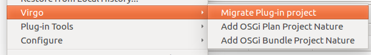

Before the Virgo Tools provided support for PDE, some developers where using an unofficial Eclipse plug-in called PDE2Virgo. The Virgo Tools provide a migration action for migrating PDE2Virgo projects into PDE bundle projects. The migration action is accessible via Virgo context menu and is labeled Migrate PDE2Virgo project. The action is visible when the selection contains only PDE2Virgo projects and supports multiple selection.
A migration action is also provided for PDE users who want to migrate PDE Plug-in projects to PDE bundle projects to be able to run their projects on a Virgo test environment integrated in Eclipse. The migration action is accessible via Virgo context menu and is labeled Migrate Plug-in project. The action is visible when the selection contains only Plug-in projects and supports multiple selection.
